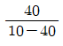
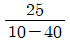
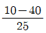
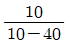
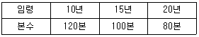

산림산업기사 (2012-03-04 기출문제)
1과목: 조림학
1. 산림용 고형 복합비료를 임목에 시비할 때 가장 좋은 방법은?
- 측공시비
- 공중살포
- 표면시비
- 식혈저시비
(정답률: 67%)

2. 식물이 필요로 하는 필수원소 중에서 수목의 채내 이동이 상대적으로 어려운 원소는?
- 칼륨
- 칼슘
- 질소
- 마그네슘
(정답률: 74%)
3. 일반적인 임목의 무육순서로 옳은 것은?
- 풀베기→간벌→제벌
- 풀베기→제벌→간벌
- 간벌→제벌→풀베기
- 제벌→풀베기→간벌
(정답률: 78%)
4. 왜림작업의 대상이 될 수 있는 수종으로만 나열 된 것은?
- 물푸레나무, 굴참나무, 리기다소나무
- 버드나무, 아까시나무, 상수리나무
- 히말라야시다, 단풍나무, 싸리류
- 아까시나무, 사시나무, 가중나무
(정답률: 72%)
5. 임지시비에 대하여 바르게 설명하고 있는 내용은?
- 가지치기 후에는 시비를 하지 않는 것이 안전하다.
- 유령림에서의 춘기 시비는 5월말까지, 추기시비는 11월중에 실시하는 것이 좋다.
- 임지 시비의 효과는 보통 1~2년간 지속되기 때문에 벌채 1~2년 전에 다량의 시비를 하는 것이 바람직하다.
- 간벌을 실시한 직후에는 잔존목의 생육공간이 크게 확대되기 때문에 추가적인 시비가 불필요하다.
(정답률: 65%)
6. 직사각형 식재의 경우 식재본수 계산식은?
- 조림지 면적/(묘목간의 거리 × 2)
- 조림지 면적/(묘목간의 거리)2
- 조림지 면적/(묘간거리 × 열간거리)
- 조림지 면적/(묘목간의 거리2× 0.866)
(정답률: 79%)
7. 왜림작업에 대하여 바르게 설명하고 있는 내용은?
- 갱신작업을 위한 벌채는 성장휴지기에 실시한다.
- 여러 개 발생한 맹아지의 정리는 단 1회의 작업으로 완료한다.
- 왜림작업에서는 택벌적인 벌채작업 방법이 적용될 수 없다.
- 맹아지 발생을 위한 근주의 절단면은 25cm 이상의 높이에서 절단면이 수평이 되도록 절단한다.
(정답률: 66%)
8. 석회분이 적어 낙엽의 분해가 늦지만 산화칼륨이 많은 토양을 형성하는 변성암에 속하는 것은?
- 화강암
- 현무암
- 혈암
- 편마암
(정답률: 70%)
9. 묘포구획을 할 때 동서방향으로 길게 상을 만드는 것은?
- 제초작업에 편리하므로
- 파종하기가 편리하므로
- 관수 용이
- 햇빛을 많이 받기 위해서
(정답률: 89%)
10. 풀베기 중 모두베기에 해당하는 것은? (문제 오류로 정답은 4번입니다.)
- 복원중 (정확한 보기내용을 아시는분께서는 오류 신고를 통하여 보기 내용 작성 부탁드립니다.)
- 복원중 (정확한 보기내용을 아시는분께서는 오류 신고를 통하여 보기 내용 작성 부탁드립니다.)
- 복원중 (정확한 보기내용을 아시는분께서는 오류 신고를 통하여 보기 내용 작성 부탁드립니다.)
- 복원중 (정확한 보기내용을 아시는분께서는 오류 신고를 통하여 보기 내용 작성 부탁드립니다.)
(정답률: 78%)
11. 지구 북반구의 수평적 산림대 중에서 침엽수림이 비교적 우세한 곳은?
- 한대림
- 난대림
- 온대림
- 열대림
(정답률: 76%)
12. 식물의 어린뿌리가 토양 중에 있는 곰팡이와 공생을 하는 균근의 역할이 아닌 것은?
- 토양중에 있는 양료의 흡수를 돕는다.
- 고산지대와 같이 생육환경이 나쁜 곳에서는 특히 중요한 역할을 한다.
- 질소고정작용을 한다.
- 토양의 건조에 대한 저항성을 높여준다.
(정답률: 55%)
13. 다음 그림과 같은 구성을 보이는 동령임분에서 빗금친 부분을 간벌하였다면 어떠한 간벌방식이 적용된 것인가?
- 하층간벌
- 상층간벌
- 택벌식 간벌
- 기계적 간벌
(정답률: 66%)
14. 육묘관리에서 해가림이 필요 없는 수종은?
- 소나무
- 전나무
- 가문비나무
- 삼나무
(정답률: 78%)
15. 종자의 결실주기가 틀린 것은?
- 포플러류, 버드나무류는 매년 결실한다.
- 삼나무, 편백, 들메나무는 2~3년 주기로 결실한다.
- 가문비나무는 3~4년 주기로 결실한다.
- 낙엽송, 너도밤나무는 1~2년 주기로 결실한다.
(정답률: 63%)
16. 임목의 종자채취 시기를 연결한 것으로 가장 적합한 것은?
- 소나무-11월
- 사시나무-6월
- 회양목-7월
- 물오리나무-8월
(정답률: 74%)
17. 조림지의 풀베기 작업 시기에 관한 설명 중 옳은 것은?
- 생장이 완료된 늦가을에 실시하는 것이 좋다.
- 생장이 시작되는 4-5월이 좋다.
- 여름철인 6-8월이 좋다.
- 수액이 이동하기 전인 4월 이전이 좋다.
(정답률: 87%)
18. 용기묘의 조림으로 생기는 장점을 잘못 설명한 것은?(오류 신고가 접수된 문제입니다. 반드시 정답과 해설을 확인하시기 바랍니다.)
- 양묘에 있어서 기후, 입지의 영향을 많이 받는다.
- 묘목 운반 시 건조의 피해가 없다.
- 묘목의 생산에 나근묘 보다 더 싼 가격으로 생산된다.
- 식재 기간을 분산하여 노동력을 유효적절하게 사용한다.
(정답률: 51%)
19. 접목을 할 때 접수와 대목이 밀착되어야 하는 부분은?
- 외피
- 내피
- 형성층
- 중심부
(정답률: 80%)
20. 세립종자 파종전에 상면을 진압판 또는 로울러로 다지는 이유 중 가장 타당한 것은?
- 발아촉진을 하기 위함이다.
- 제초를 용이하게 하기 위함이다.
- 종자발아를 일제히 되게 하며, 모관수 공급을 용이하게 하기 위함이다.
- 토양이 팽윤해 지고, 공기와 수분 유동이 좋아지게 하기 위함이다.
(정답률: 54%)
2과목: 산림보호학
21. 농약 사용 시의 미량살포를 바르게 설명한 것은?
- 약제에 다량의 물을 타서 조금씩 살포하는 것
- 액제살포의 한 방법으로 소량을 살포하는 것
- 액제살포의 한 방법으로 거의 원액에 가까운 농도의 농후액을 살포하는 것
- 소량의 물을 약제에 타서 살포하는 것
(정답률: 67%)
22. 다음 중 병원체가 토양중에서 월동하지 않는 것은 어느 것인가?
- 식물병원성바이러스
- 자줏빛날개무늬병균
- 근두암종병균
- 묘목의 잘록병균
(정답률: 69%)
23. 솔나방의 생태적 특성 중 옳지 않은 것은?
- 1년에 1회로 성충은 7-8월에 발생한다.
- 보통 5령충으로 월동한다.
- 줄기에 약 400개의 알을 낳는다.
- 유충의 가해는 1년 2회이다.
(정답률: 45%)
24. 다음 중 오리나무잎벌레의 월동 형태로 가장 적합한 것은?
- 알
- 유충
- 번데기
- 성충
(정답률: 76%)
25. 해충발생량의 변동을 조사할 때, 한 지역 내의 개체로 밀도를 결정하는데 관여하지 않는 요인은?
- 출생률
- 사망률
- 이동률
- 변이율
(정답률: 82%)
26. 다음 중 묘포에서 늦서리의 피해를 막는 방법 중 틀린 것은?
- 주풍 방향에 방풍림을 조성한다.
- 배수가 잘 되도록 한다.
- 피해를 받기 쉬운 수종은 파종을 가능한 빨리 한다.
- 묘상에 낙엽이나 짚을 덮어 묘목을 보호해 준다.
(정답률: 67%)
27. 다음 중 방화선을 설치하는데 가장 적합한 위치는?
- 산기슭
- 산의 중복
- 산의 능선
- 산의 계곡
(정답률: 68%)
28. 포플러류로 울타리가 된 묘포장을 개설하였다. 다음 수종 중 그 묘포장에서 양묘를 하지 않는 것이 좋은 것은?
- 잣나무
- 소나무
- 낙엽송
- 전나무
(정답률: 72%)
29. 최근 우리나라 산불발생에 가장 많이 차지하는 원인은?
- 입산지의 실화
- 논, 밭두렁의 소각
- 어린이의 불장난
- 성묘객의 실화
(정답률: 69%)
30. 펜티온 유제 50%를 500배로 희석하여 10a당 160L를 살포하여 해충을 방제하고자 할 때, 약제의 소요량은?
- 576ml
- 77ml
- 144ml
- 320ml
(정답률: 67%)
31. 수간의 인피부를 가해하는 해충 중 공동을 만드는 것은?
- 유리나방
- 비단벌레
- 하늘소
- 나무좀
(정답률: 40%)
32. 다음 수목병 중 담자균류에 의한 병은?
- 오동나무 탄저병
- 낙엽송 가지끝마름병
- 소나무 잎녹병
- 오리나무 갈색무늬병
(정답률: 48%)
33. 병원체가 종자에 붙어서 월동하는 것은?
- 밤나무 줄기마름병균
- 잣나무 털녹병균
- 오리나무 갈색무늬병균
- 오동나무 빗자루병균
(정답률: 46%)
34. 산림성 조류는 곤충 숫자를 적절히 제한함으로써 산림식생의 활력에 도움을 주는데, 박새가 1년간 포식하는 나비목 애벌레 곤충량은 대략 얼마나 되는가?
- 약 850마리
- 약 8,500마리
- 약 85,000마리
- 약 850,000마리
(정답률: 56%)
35. 철의 결핍증상에 대한 설명으로 옳은 것은?
- 묘포장 등에서 보르도액을 연용하면 철의 결핍 증상이 초래되기 쉽다.
- 석회를 사용하여 토양을 중성화하면 산성토양에 비하여 철의 흡수가 늘어난다.
- 철화합물을 수목의 줄기에 직접 주입하면 결핍증상을 완화시킬 수 있다.
- 주로 잎의 가장자리부터 말라서 안쪽으로 뒤틀리고 낙엽이 초래된다.
(정답률: 46%)
36. 비가 많은 환경에서는 수목에 병이 들기 쉬운데, 이와 관련하여 잘못 설명한 것은?
- 밤나무에 흰가루병의 발생이 심해진다.
- 오동나무 탄저병의 발생이 우려된다.
- 장미 검은무늬병의 피해가 심해진다.
- 자작나무 갈색점무늬병의 발생이 우려된다.
(정답률: 56%)
37. 다음 중 산림해충의 발생 예찰 방법이 아닌 것은?
- 타생물 현상과의 관계를 이용하는 방법
- 통계를 이용하는 방법
- 약제를 이용하는 방법
- 개체군 동태를 이용하는 방법
(정답률: 69%)
38. 해충의 유인제로 가장 널리 쓰이는 물질은?
- 페르몬(Pheromone)
- 발효과즙
- 당밀
- 유지놀(Eugenol)
(정답률: 87%)
39. 수목 병해 중 진균에 의한 수병은?
- 감귤궤양병
- 근두암종병
- 뽕나무 오갈병
- 흰가루병
(정답률: 59%)
40. 다음 중 수병의 예방법이 아닌 것은?
- 중간기주의 제거
- 검역
- 옥시테트라사이클린의 수간주입
- 종묘소독
(정답률: 54%)
3과목: 임업경영학
41. 임업조수익이 1,000만원이고, 임업경영비가 400만원일 때 임업소득은 얼마인가?
- 500만원
- 600만원
- 700만원
- 800만원
(정답률: 85%)
42. Glaser식은 어느 영급의 임목가를 산출하는 것인가?
- 중간영급
- 벌기영급
- 유령급
- 전영급
(정답률: 81%)
43. 자본장비도의 개념을 임업경영에 도입할 때 자본효율에 해당하는 것은?
- 생장량
- 생장률
- 소득
- 축적
(정답률: 53%)
44. 임업경영의 지도원칙 중에서 최소한의 비용으로 최대의 효과를 발휘할 수 있게 하는 원칙은?
- 수익성의 원칙
- 경제성의 원칙
- 생산성의 원칙
- 보속성의 원칙
(정답률: 71%)
45. 감가상각비를 계산하기 위한 기본적 요소가 아닌 것은?(오류 신고가 접수된 문제입니다. 반드시 정답과 해설을 확인하시기 바랍니다.)
- 취득원가
- 잔존가치
- 자본이율
- 추정 사용기간
(정답률: 13%)
46. 다음 중 지황조사의 항목이 아닌 것은?
- 소밀도
- 방위
- 지리
- 지위
(정답률: 58%)
47. 다음 중 영급 표시가 잘못된 것은?
- 27년생=Ⅲ
- 20년생=Ⅲ
- 11년생=Ⅱ
- 9년생=Ⅰ
(정답률: 81%)
48. 우리나라의 공·사유림의 경영계획 작성에서 1개의 임반 면적은 가능한 몇 ha내외로 구획하도록 정하고 있는가?
- 100ha
- 200ha
- 300ha
- 400ha
(정답률: 89%)
49. 10년 후에 10억원의 가치가 있는 산림의 현재가를 구하면 얼마인가? (단, 연이율은 6%, 전가계수는 1/1.06 10=0.5584)
- 약5억2천7백만원
- 약 5억5천8백만원
- 약6억2천3백만원
- 약7억2천1백만원
(정답률: 75%)
50. 비터리히(Bitterich)법으로 임분재적을 측정하기 위하여 계수(K)가 1인 릴라스코프로 측정한 결과 0.5로 측정된 것이 12이고, 1로 측정된 것이 28이었다. 이 임분의 측정 결과로 옳게 서술한 것은?
- ha당 재적은 34m2이다.
- 총 재적은 34m2이다.
- ha당 흉고단면적 합계는 34m2이다.
- 총 흉고단면적 합계는 34m2이다.
(정답률: 56%)
51. 다음 중 임령에 따른 연년생장량과 평균생장량의 관계에 대한 설명으로 틀린 것은?
- 처음에는 연년생장량이 평균생장량보다 크다.
- 연년생장량은 평균생장량보다 빨리 극대점을 가진다.
- 평균생장량의 극대점에서 두 생장량의 크기는 다르다.
- 평균생장량이 극대점에 이르기까지는 연년생장량이 항상 평균생장량보다 크다.
(정답률: 70%)
52. 장령기 임목평가에 자주 쓰이는 임목가격결정 방법은?
- 임목매매가
- 임목공급가
- 임목비용가
- 임목기망가
(정답률: 75%)
53. 어떤 임분에서 임목의 임령이 10, 20, 25, 30, 40일때, 이 임분의 임령을 나타낸 것 중 가장 적합한 것은?




(정답률: 77%)
54. 아래(보기)와 같은 임령림의 본수령(평균임령)은 얼마인가?

- 약13.3년
- 약13.5년
- 약13.8년
- 약14.3년
(정답률: 62%)
55. 임업경영분석자료 중 조수익이 4,500,000원이고 경영비가 1,500,000원이면 소득율은 얼마인가?
- 약33%
- 약43%
- 약67%
- 약200%
(정답률: 65%)
56. 임지기망가의 계산요소 중에서 벌기령의 장단에 영향을 미치는 요소가 아닌 것은?
- 이율
- 주벌수확
- 간벌수확
- 관리자본
(정답률: 74%)
57. 임목평가방법에 대한 설명으로 적절치 못한 것은?
- 유령림의 임목평가방법으로는 원가방식을 채택하는 것이 보통이다.
- 벌기 미만 장령림의 임목평가로는 임목기망가법이 적절하다.
- 벌기 이상 임분의 임목평가로는 시장가역산법이 적절하다.
- 중령림의 임목평가로는 비용가법이 적절하다.
(정답률: 75%)
58. 임업자산 중 가장 가치가 큰 것은?
- 임도
- 가공색도
- 집재기
- 임목축적
(정답률: 84%)
59. 임업노동의 일반적인 특성을 바르게 설명한 것은?
- 산림이 넓고 험하기 때문에 필요한 자재의 수송은 어려우나 작업감독은 용이하다.
- 작업장소인 산림까지의 이동시간이 길어서 실제 작업시간도 길어진다.
- 단위면적당 노동량이 많아 노동분쟁이 자주 일어난다.
- 농업노동력을 벌채, 운반노동에 이용하려면 별도로 훈련을 시켜야 한다.
(정답률: 77%)
60. 자산, 자본, 부채의 관계를 옳게 표현한 것은?
- 자본=부채-자산
- 부채=자본/자산
- 자본=자산+부채
- 자산=자본+부채
(정답률: 68%)
4과목: 산림공학
61. 반출하고자 하는 목재의 길이 10m, 임도의 폭 3m일 때 최소곡선반지름은 얼마 이상으로 설치하면 되는가?
- 2.5m
- 4.2m
- 8.3m
- 16.6m
(정답률: 74%)
62. 산복부에서 노선길이를 연장하여 종단물매를 완화하게 하거나, 동일사면에서 우회할 목적으로 설치하는 곡선은?
- 단곡선(Simple Curve)
- 반향곡선(Reversed Curve)
- 복심곡선(Compound Curve)
- 배향곡선 (Hair pin Curve)
(정답률: 64%)
63. 모래언덕에 조림하고자 하는 수종에 대한 설명으로 틀리는 것은?
- 온도의 변화와 강한 바람에 잘 견디는 수종
- 왕성한 낙엽, 낙지 등으로 지력을 증진시키는 수종
- 양분과 수분에 대한 요구도가 높은 수종
- 3-4년생의 해송과 아까시나무 등의 수종
(정답률: 90%)
64. 임도의 종단측량에 가장 널리 사용되는 측량기는?
- 평판
- 트랜싯
- 레벨
- 컴퍼스
(정답률: 67%)
65. 다음 저목장에 관한 설명 중 맞는 것은?
- 보통 원목쌓기의 높이는 1-2m이다
- 저목장에서 목재쌓기 방법으로는 직각쌓기와 평행쌓기가 있다.
- 저목은 되도록 장기간으로 하는 것이 목재의 질을 향상시킨다.
- 저목장의 면적은 일반적으로 1ha당 3,000m3을 표준으로 한다.
(정답률: 68%)
66. 산림면적이 2,000ha이고, 임도 시설거리가 40km일 때, 임도밀도를 계산하면?
- 50m/ha
- 40m/ha
- 30m/ha
- 20m/ha
(정답률: 41%)
67. 사방댐 설계 시 고려해야 할 사항 중 올바른 것은?
- 댐의 하단부에 암석층이 없어야 한다.
- 평형물매와 홍수물매가 같아야 한다.
- 댐 날개가 닿는 곳에 점토가 있어야 한다.
- 구역이 긴 구간은 계단상 댐을 설치한다.
(정답률: 78%)
68. 일반묘 및 포트묘 식재공법에서 식재수종이 갖추어야 할 조건과 거리가 먼 것은?
- 미관이 좋은 수종
- 토양개량효과가 기대되는 수종
- 생장력이 왕성한 수종
- 뿌리의 뻗음이 좋고 토양의 긴박 능력이 큰 수종
(정답률: 66%)
69. 대규모 공사에 주로 사용하는 콘크리트 배합방법은?
- 용적배합
- 중량배합
- 복식배합
- 복합배합
(정답률: 63%)
70. 벌도목이 지표면 위에서 평평하게 누워있는 것을 방해하는 물건 때문에 벌도목이 받는 압력은 무엇인가?
- 바버체어
- 인장강도
- 바인드
- 툼스톤
(정답률: 48%)
71. 다음의 수로 중 조도계수의 값이 가장 작은 것은?
- 흙수로
- 메쌓기 돌수로
- 콘크리트 수로
- 찰쌓기 돌수로
(정답률: 56%)
72. 다음 중 시멘트의 경화 촉진제로 쓰이는 것은?
- 염화칼슘
- 석고
- 탄산칼슘
- 탄산나트륨
(정답률: 77%)
73. 사방댐 중에서 흙댐의 경우 댐 높이가 10m일 때 댐마루 나비는 얼마인가?
- 2m
- 2.5m
- 3m
- 3.5m
(정답률: 51%)
74. 수피이용 등 박피가 필요한 경우의 적절한 벌채시기는 언제가 가장 적합한가?
- 봄
- 여름
- 가을
- 겨울
(정답률: 62%)
75. 절토면 길이가 길어서 침식이나 붕괴의 위험이 있는 곳에 시설하는 배수구는?
- 돌림수로
- 세월교
- 옆도랑
- 암거
(정답률: 53%)
76. 다음 중 제1차 운재작업에 포함되지 않는 것은?
- 끌기 집재(Skidding)
- 운재(Log Transportation)
- 재목 모으기(Bunching)
- 집재장으로 나르기(Forwarding)
(정답률: 50%)
77. 작업의 능률이나 피로에 영향을 미치는 생리학적 요소가 아닌 것은?
- 성별
- 경험
- 연령
- 생체리듬
(정답률: 67%)
78. 비탈면 붕괴 등의 재해가 발생하였을 때에 실시 할 수 있는 응급복구공사로 적절하지 못한 것은?
- 콘크리트 옹벽
- 흙마대
- 돌망태
- 편책
(정답률: 70%)
79. 주사구의 위치는 앞 모래 언덕의 위치를 결정한 다음, 육지쪽 지형을 고려하여 결정하지만 완전히 발달한 사구를 조성하기 위한 사구의 간격은 양 사구 고저차의 몇 배 이상으로 하는가?
- 10배
- 20배
- 40배
- 60배
(정답률: 47%)
80. 견치돌로 쌓는 돌쌓기에 대한 설명으로 틀린 것은?
- 돌쌓기는 가급적 골쌓기로 한다.
- 뒷채움돌은 견치돌을 받치고 배수를 양호하게 한다.
- 찰쌓기는 콘크리트 구조인 것으로서 신축 줄눈이 필요없다.
- 밑돌은 큰 것은 먼저 골라쓰고 줄눈 등이 생기지 않도록 쌓는다.
(정답률: 77%)